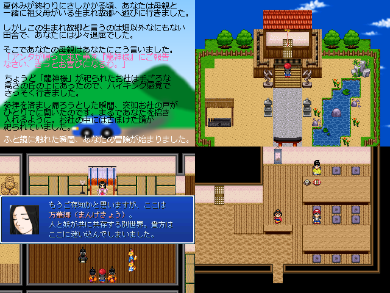

No.62 万華郷 ～Mangekyou～ |
|
 |
|
| 作者：FAH-Q | |
| ツクール：RPGツクール2000 | |
| ジャンル：和風RPG | |
| 配信/投稿：可/連絡下さい見に行きます！ | |
| 作者コメント： 異世界を冒険し楽しい夏休みを過ごす和風RPGです。一昔前の ゲームみたいなそこそこ歯応えのある難易度と、散策を楽しみながら ダンジョンを攻略していくゲームです。仲間と共に力を合わせ、 不思議な術で妖（あやかし）に立ち向かい、万華郷を冒険しましょう！ プレイ時間は大体5～6時間程度の短編ゲームです。 一応、隠し要素も少しだけあります。 季節外れですが楽しんでいただければ幸いです。 |
|
| 管理人コメント： 寒い冬にストーブをガン炊きしながら夏が舞台のゲームをPIAIする贅沢、これだ。 |
|
| ダウンロード(11.5MB) / 感想掲示板 | |
| 前の作品 / 次の作品 / TOPへ戻る | |